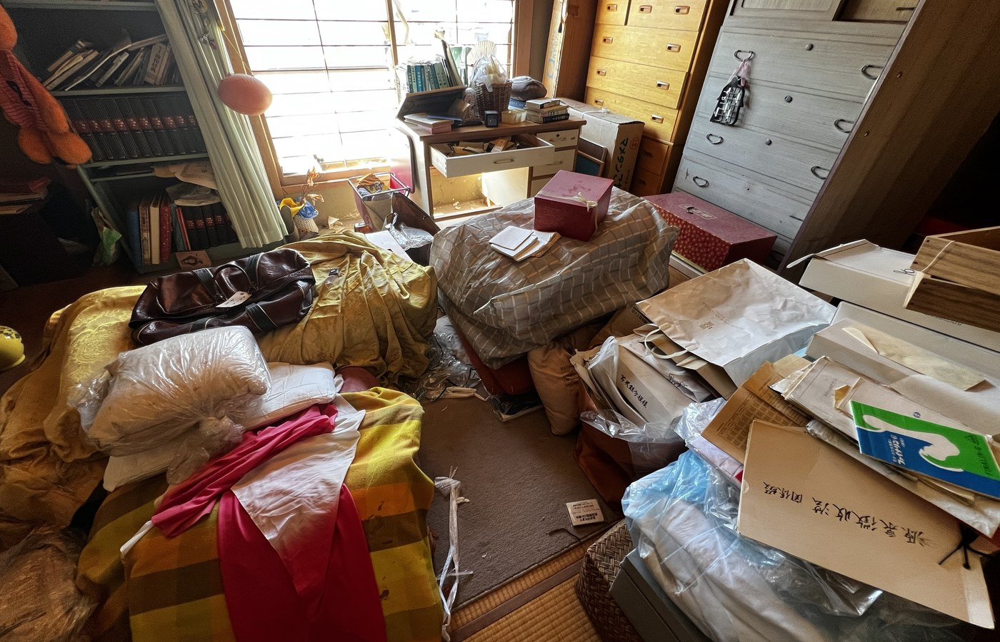

空き家・実家整理
空き家・実家の片付け、お任せください。
「実家を相続したけれど、家の中の荷物をどうしたらいいかわからない。」
「空き家を売却したいけれど、家財が残っている。」
こうしたお悩みを、片付け本舗なかのくんがサポートします。ご家族だけで片付けるのは体力的にも精神的にも大きな負担になります。まずは現地を確認させていただき、買取できる物と、そうでない物を仕分けするところから始めましょう。
FLOW
空き家・家財整理の流れ
1
現地確認
お家の広さや荷物の量を確認させていただきます。写真での事前確認も可能です。
2
家財の仕分け
買取できる物、リユースできる物、廃棄が必要な物を仕分けします。
3
買取できる物を査定
家具・家電・工具・お品物などをまとめて査定いたします。
4
買取・搬出
査定額にご納得いただいたうえで買取し、搬出いたします。
5
残った廃棄物について適切な処理方法をご案内
買取対象とならない廃棄物については、自治体のルールまたは許可を有する提携事業者をご案内します。
6
必要に応じて不動産売却・リフォーム相談へ
家財整理が完了した後、空き家の売却やリフォームをご希望の場合は、株式会社TONDOKOROが運営する「なかの不動産」（別事業）をご案内いたします。
こんな方に
こんなお悩みの方にご利用いただいています
- ・実家を相続したが荷物が片付けられない
- ・空き家を売却する前に家財を整理したい
- ・遠方に住んでいて頻繁に通えない
- ・遺品整理を進めたいが手が回らない
- ・生前整理を少しずつ進めたい
- ・大きな家具・家電の搬出方法がわからない
空き家の売却までご相談いただけます
家財整理の先、空き家の売却・リフォームもご相談ください。
家財整理だけでなく、その後の空き家の売却やリフォームについてもご相談いただけます。
※なかの不動産（株式会社TONDOKOROが運営するリフォーム・不動産事業）と片付け本舗なかのくん（買取・家財整理事業）は別事業です。
廃棄物の処分について
片付け本舗なかのくんは「買取・リユース・家財整理」を主軸とする事業であり、一般廃棄物収集運搬業の許可業者ではありません。買取の対象とならない廃棄物の処分が必要な場合は、お住まいの自治体のルール、または許可を有する提携事業者をご案内いたします。
片付け本舗なかのくんは「買取・リユース・家財整理」を主軸とする事業であり、一般廃棄物収集運搬業の許可業者ではありません。買取の対象とならない廃棄物の処分が必要な場合は、お住まいの自治体のルール、または許可を有する提携事業者をご案内いたします。